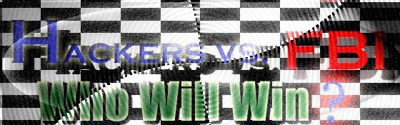

0wned you
We fucking own you. The war continues. You fuck with me and my friends, you will be owned. The FBI can't win. They may get some of us, but not all of us. Stop the raids you filthy morons. If you don't, then you will continue getting owned.
Stupid
Chink Gov. Remember Tianamen?


(even though he pleaded guilty)
1.
kevin was denied access to evidence until months before his trial
2.
he was given limited access to a computer, and over 1700 pieces of evidence
3.
among the evidence there was so much to read, he would have had to read
some 50,000 pages a day to prepare
4.
he was being heard by Judge Pfaelzar who had a previous beef with kevin
5.
he was denied access to some of the evidence being presented against him
even if he had gone to trial, it would have been in a hostile court, with legal counsel that was not prepared for the case
at
that point, he had the option of taking the plea and serving out less than
a year.. or risking trial without all the evidence, in a hostile court,
with inadequate legal defense.. and getting as much as 35 years
